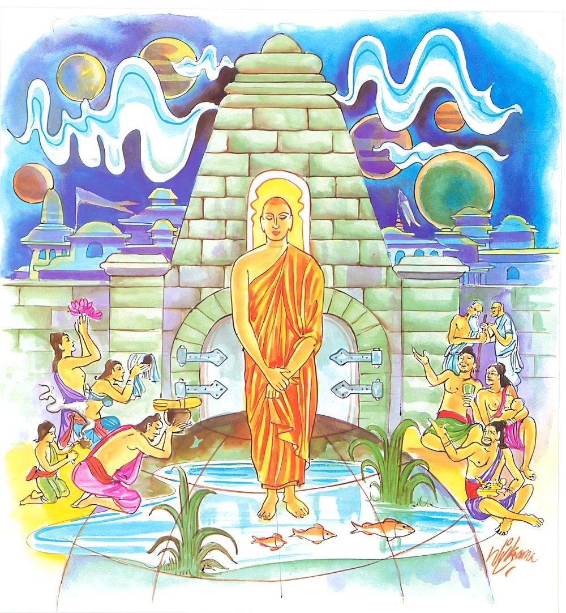

7-6 සවන ශාරීපුත්රස්ථවිර වස්තුවයි.
මෙම කතාව සද්ධර්ම සාගරයෙන් ද කියවන්න.
පඨවිසමො නො විරුජ්ඣති ඉන්දඛීලූපමො තාදි සුබ්බතො
රහදො’ව අපෙතකද්දමො සංසාරා න භවන්ති තාදිනො.
පොළොව හා සම වූ, ඒෂිකාස්තම්භයක් බඳු වූ, අටලෝ දහමින් නො සැලෙන, සුන්දර වූ ධුතාඞ්ගාදි ව්රත ඇති යම් රහතෙක් (තමාට ආක්රෝශ කරන්නහුට ද තළන්නහුට ද පෙළන්නහුට ද) විරුඬ නො වේ ද (හෙවත් නො කිපේ ද), පහ වූ මඩ ඇති විලක් මෙන් ප්රසන්න වේ ද, අටලෝ දහමින් නොපෙරැළෙන ඒ රහත්හට (සුගති දුගති දෙක්හි ච්යුති ප්රතිසන්ධි වශයෙන්) සංසරණයෝ නො වන්නාහ.

පඨවීසමො ආදි මේ ධර්මදේශනාව බුදුරදුන් දෙව්රම් විහාරයෙහි වාසය කරන කාලයේ සැරියුත් තෙරණුවන් අරභයා දේශනා කරන ලද්දකි.
එක් සමයක ආයුෂ්මත් සැරියුත්තෙරණුවෝ වස් කෙළවර චාරිකාවේ හැසිරෙනු කැමතිව භාග්යවතුන්වහන්සේගෙන් අසා වැඳ තම පිරිවර භික්ෂූන් සමඟ නික්මුණාහුය. තෙරණුවෝ නම්ගොත් වශයෙන් ප්රකට භික්ෂූන්ට, ඒ නම්ගොත්වලින්ම කථා කොට නැවැත්වූහ. නම්ගොත් වශයෙන් ප්රසිද්ධියක් නැති එක් භික්ෂුවක්, අනේ මටත් නම්ගොත් වශයෙන් ගෙන කථා කොට නවත්වන්නේ නම් යෙහෙකියි සිතීය. මහා සංඝයා මැද සිටි හෙයින් සැරියුත් හිමියෝ ඒ භික්ෂුව ගැන සැලකිල්ලක් නොදැක්වූහ. ඒ භික්ෂුව, අනිත් භික්ෂූන්ට මෙන් මා ගැන සැලකිල්ලක් නොදැක්වීයයි තෙරුන් කෙරෙහි වෛර බැන්දේය. මේ අතර තෙරුන්ගේ සංඝාටි (සඟල සිවුර) කෙළවර ඒ භික්ෂුවගේ ඇඟේ වැදුණේය. එයිනුත් වෛරයම හටගත්තේය.
හෙතෙම, දැන් තෙරුන් විහාරය ළඟ කොටස ඉක්ම වන්නට ඇතැයි දැන බුදුන් ළඟට ගොස්, ස්වාමීනි, ආයුෂ්මත් සැරියුත් තෙරණුවෝ ඔබවහන්සේගේ අග්රශ්රාවකයෙමියි මගේ කන්සිදුර බිඳී යන තරම් පහරක් ගසා, මා ක්ෂමා කර නොගෙනම චාරිකාවේ ගියහයි දන්වා සිටියේය. ශාස්තෘන්වහන්සේ තෙරුන් කැඳවූහ. එකෙණෙහි මහමුගලන්තෙරණුවෝත් ආනන්දතෙරණුවෝත් මෙසේ සිතූහ. අපේ දෙටු සොහොයුරා මේ භික්ෂුවට ගැසූ නොගැසූ බව ශාස්තෘන්වහන්සේ නොදනිත්ද? සැරියුත්හිමියන් ලවා සිංහනාදයක් කරවනු කැමැත්තක් ඇති වියහැකියයි සලකා පිරිස රැස් කරවන්නෙමුයයි උන්වහන්සේලා යතුරුමුදුත් රැගෙන පිරිවෙන් දොරටුවල ඇවිදිමින්, ඇවැත්නි රැස්වව්, ඇවැත්නි රැස්වව්, දැන් ආයුෂ්මත් සැරියුත්තෙරණුවෝ බුදුන් හමුවෙහි සිංහනාද කරන්නාහුයයි ප්රකාශ කළහ. මහත් භික්ෂුසමූහයක් රැස්වූහ.
සැරියුත්තෙරණුවෝත් පැමිණ බුදුන් වැඳ හිඳගත්හ. ඉන්පසු බුදුරජාණන්වහන්සේ එකරුණ විචාළහ. තෙරණුවෝ මේ භික්ෂුවට මම නොගැසුවෙමියි නොකියාම තමන්ගේ ගුණකථාව කියමින්, ස්වාමීනි, යම් කෙනෙක් කායගතාසති භාවනාව පුරුදු නොකොට නැත්නම් ඔහු මෙහි වෙනත් සබ්රම්සරුන්වහන්සේ නමකට ගසා සමාකරවා නොගෙන චාරිකාවේ හැසිරෙන්නෙහිදැයි කියා; ස්වාමීනි, යම්සේ පොළොවෙහි පිරිසිදු දේත් දමති. අශුචිත් දමති ආදි වශයෙන් තමන්ගේ සිත හොඳනරක ඉවසීමේ ශක්තිය ඇතිබව ප්රකට කරමින් ජලය, ගින්න, වායුව, රජෝහරණ, චණ්ඩාලකුමාර, අං ගැලවී ගිය හරකෙකු ආදියට සමාන කරමින් සර්පකුණපයක් මෙන් තම සිරුර පිළිකුල් කටයුතු බව දන්නා බවද, තම සිරුර අශුචි පිරුණ කළයක් වැනියයි දන්නා බවද යන මේ උපමා නවයෙන් තමන් ගුණ කථාව ප්රකටකරන විට නවවාරයක් මුහුද හිම් කොට ඇති මහපොළොව කම්පා විය.
රජෝහරණ, චණ්ඩාල කුමාර, අශුචි පිරුණ කළගෙඩි උපමා ගෙනහැර පානා විට පෘථග්ජන භික්ෂූහු කඳුළු නොවගුරුවා සිටීමට අසමත් වූහ. රහතන්වහන්සේලාට ධර්මසංවේගය ඇතිවිය. තෙරුන් තමාගේ ගුණ ප්රකාශකරන විට දොස් පැවරූ භික්ෂුවගේ මුළු ශරීරය පුරා දැවිල්ලක් උපන්නේය. හෙතෙම එවිටම බුදුරදුන්ගේ පාමුල වැඳ වැටී තමන් බොරුකීමේ දෝෂය ප්රකාශකොට සමාව අයැදීය. බුදුරජාණන්වහන්සේ සැරියුත්තෙරණුවන් අමතා, ශාරීපුත්රය, මේ හිස් මිනිසාගේ දෝෂයට සමාව දෙන්න. නැතහොත් මොහුගේ හිස සත්කඩකට පැලීයන්නේයයි වදාළහ.
සැරියුත්තෙරණුවෝ උක්කුටුකයෙන් හිඳ දොහොත් මුදුනේ තබා ස්වාමීනි, මම ඒ ආයුෂ්මතුන්ට සමාව දෙමි. ඒ ආයුෂ්මතුන්ද මගේ දෝෂයක් ඇත්නම් සමා දෙනු මැනවියයි කීහ. භික්ෂූහු මෙසේ කීහ. ඇවැත්නි බලව්. සැරියුත්තෙරණුවන්ගේ ගුණ අසීමිතය. මෙබඳු කෙනෙකුන්ට මුසාවාදයෙන් චෝදනා කරන භික්ෂුව කෙරෙහි අල්පමාත්ර වූ හෝ කෝපයක් හෝ ද්වේෂයක් නොකොට තමන්ම ඇත්කුටුකයෙන් හිඳ ඇඳිලි බැඳ ක්ෂමාව දෙයි යනුවෙනි.
බුදුරජාණන්වහන්සේ ඒ කථාව අසා මහණෙනි, කුමක් කියව්දැයි විචාරා ස්වාමීනි, මෙනම් කථාවක්යයි කීකල්හි මහණෙනි, ශාරිපුත්ර වැනි අය තුළ කෝප ද්වේෂ ඉපදවීම කළ නොහැක්කකි. මහණෙනි, ශාරිපුත්රයන්ගේ හිත මහපොළොව සමානය. ඉන්ද්රඛීලයක් මෙන්ය. පැහැදිලි ජලය පිරි දියපොකුණක් වැනියයි පූර්වාපරසන්ධි ගළපා දහම් දෙසමින් මේ ගාථාවද වදාළහ:
නොසැලෙන පොළොව ඉඳුකිළ වැනි
වතින් සපිරි අය කිසිවිට සතුරු නොවේ
මඩ නැති විල් මෙන් තිරගතියෙන් පිරි
රහතන්ට සසර සැරුම්ද නොවේ
මහණෙනි, එහි අර්ථය නම් පොළොවෙහි පිරිසිදු සුවඳමල් ආදියද දමත්. අපිරිසිදු මළමුත්රාදියද දමත්. එසේම නුවර දොරටුවේ හොඳින් කැණ සිටවූ ඉන්ද්රඛීලය ගම්දරු ආදීහු ගළවා උදුරා දමන්ට යත්න දරති. අනිත් අය ඊට සුවඳමලින් සත්කාර කෙරෙති. එහිදී පොළොවේත් ඉන්ද්රඛීලයේත් විරුද්ධත්වයක්, අනුරෝධයක් නූපදී. එපරිද්දෙන් මේ රහත් භික්ෂූහු අටවැදෑරුම් ලෝ දහම්හි කම්පා නොවන හෙයින් තාදී නම් වෙති. වතින් පිරිපුන් බැවින් සුබ්බතො සුව්රතයහ. හෙතෙම, මොවුහු මට සිව්පසයෙන් සත්කාර කෙරෙති. මේ අය මට නොසලකත්යයි සත්කාරත් අසත්කාරත් කරන්නන් කෙරෙහි නොකිපෙත්. නොවිරුජ්ඣති විරුද්ධකම් නොපාති. එනිසා පොළොව හා ඉන්ද්රඛීල වැනිම වෙත්. යම්සේ අපගතකද්දමො පහවගිය මඩ ඇති විල් පැහැදුණු ජලයෙන් පිරුණේ වෙයිද, එසේ පහවගිය කෙලෙස් ඇති හෙයින් රාගාදිකද්දම (මඩ)වලින් අකද්දම (නොකිලිටි)ව පැහැදිලිවූයේම වෙයි. තාදිනො යනු එබඳු පුද්ගලයාට සුගති දුර්ගති සැරිසැරීම් වශයෙන් සංසාරා සංසරණයක් නම් නොවෙයි.
දේශනාවසානයෙහි භික්ෂූන් නවදහසක් පිළිසිඹියා සමග රහත්බවට පත්වූහ.